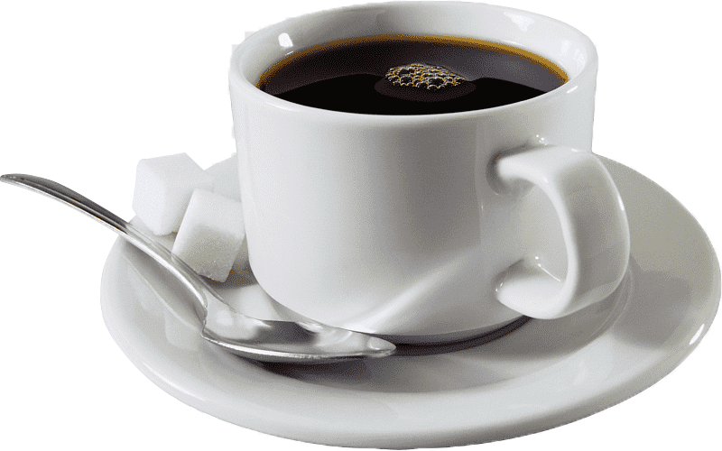

Example Cafe
Example Cafe phục vụ thức ăn hữu cơ có nguồn gốc tại địa phương

Với tằm nhìn tuyệt đẹp ra quang cảnh đại dương, Example Cafe mang đến
môi trường hoàn hảo đễ thư giãn.
Thực đơn của chúng tôi cung cấp thức ăn dùng cho bữa sáng, trưa và
tối, kế cả thức ăn chay.
Đến với Example Cafe, bạn có thể nhâm nhi một ly cà phê nóng, hay một
ly sinh tố làm mát. bạn không bao giờ cằn phải cảm thấy vội vã và có
thể thư giãn với bạn bê hoặc ngắm cảnh đại đương.
Buổi tối đặc biệt cuối tuần này
Cuồi tuần này, chúng tối tiếp tục phục vụ các món ăn vả thức uống đc biết theo phong cách Anh sang trọng với các món làm hoàn toàn bằng trứng, kem và bơ.